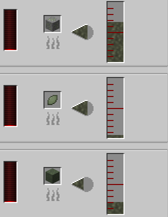
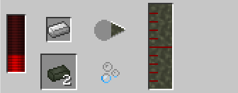
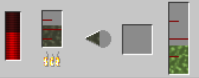
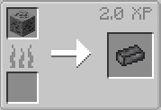
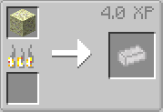
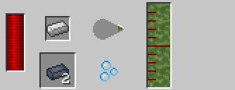
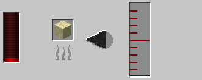
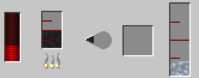
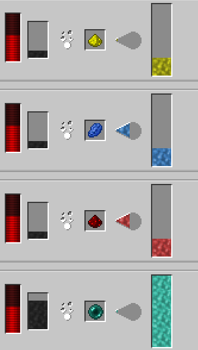

Le Naquadah également noté comme Naquada et Naqahdah est le matériau primaire utilisé pour construire des Stargates (dans le mod), vous êtes en mesure de le fondre en Naquadah liquide à un taux de 500mb par tesson, 6800 par minerai, ou 2000mb par bloc.  Ces éclats de Naquadah peuvent être obtenus grâce au minerai de Naquadah trouvé dans le filet
Pour fabriquer de l'alliage de Naquadah, vous devez utiliser un transposeur de fluide pour "remplir" un lingot de fer avec 1000mb de Naquadah liquide.  Cet alliage peut être utilisé pour fabriquer des parties de portes de l’univers
Pour fabriquer du Naquadah raffiné vous devez utiliser un alambic fractionné et lui donner du Naquadah liquide, Le taux de conversion du Naquadah liquide en Naquadah raffiné est de 300mb à 200mb. 
Le titane est un métal utilisé pour fabriquer l’iris en titane pour lequel vous avez besoin de 100 lingots de titane. Le titane est obtenu à partir de minerai de titane, le minerai de titane d’AUNIS se trouve das les caves de l’overworld. Tout comme le fer et l’or, vous devez fondre le minerai pour obtenir Lingots de titane. 
Le trinium est un métal utilisé pour fabriquer l’iris de trinium pour lequel vous avez besoin de 100 lingots de trinium. Le trinium est obtenu à partir de minerai de trinium, le minerai de trinium se trouve à la fin et peut être difficile à repérer en raison de sa coloration blanche. tout comme le fer et l’or, vous devez fondre le minerai pour obtenir des lingots de trinium. 
L'Alliage de Naquadah raffiné est utilisé pour fabriquer des Stargates et des DHD de la Voie Lactée et de Pégase ainsi que des anneaux de transport, pour le faire vous devez utiliser un transposeur de fluide pour "remplir" un lingot de fer avec 1000mb de Naquadah raffiné: 
Le silicium fondu est la base utilisée pour fabriquer tous les mélanges, pour ce faire vous aurez besoin de faire fondre le sable pour obtenir 50mb de silicium fondu (par bloc de sable). 
Le silicium raffiné est utilisé pour fabriquer le circuit de contrôle du cristal et le cristal blanc. Pour rendre le silicium raffiné, vous devez utiliser un alambic de fractionnement, le taux de conversion du silicium fondu en silicium raffiné est de 250mb à 100mb. 
le mod ajoute 4 mélanges différents: Lumière, Téléportation, Puissance et Ender. Ils sont tous fabriqués dans l’Alchemical Imbuer leurs recettes sont:
200mb de silicium fondu et 1 glowstone font 250mb de mélange de lumière
200 Mo de silicium fondu et 1 lapis-lazuli de poussière font 250 Mo de mélange de téléportation
200 mo de silicium fondu et 1 redstone font 250 Mo de mélange Power
800mb de silicium fondu et 1 ender pearl font 1000mb de mélange Ender 